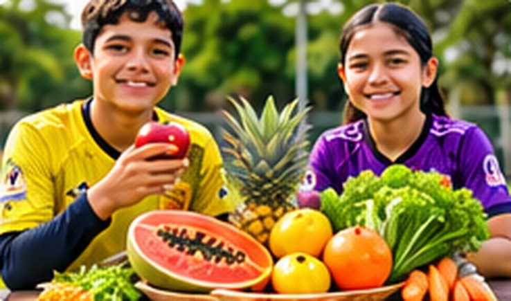
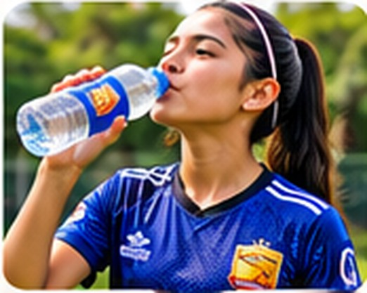

Introducción
El fútbol es mucho más que correr detrás de un balón. Es una disciplina que exige preparación física, concentración, constancia y hábitos saludables. Entre estos hábitos, la alimentación ocupa un lugar fundamental, porque proporciona la energía y los nutrientes que nuestro organismo necesita para entrenar, competir, recuperarse y desarrollarse adecuadamente.
Desde las primeras etapas de formación hasta el fútbol profesional, cada futbolista necesita comprender que una buena alimentación es parte de su preparación deportiva.
En Barracuda F.C. creemos que formar deportistas también significa educar para la vida. Por ello, promovemos hábitos que contribuyan al bienestar físico y emocional de nuestros niños, niñas, adolescentes y futbolistas de categorías superiores.
Una alimentación equilibrada no garantiza por sí sola el éxito deportivo, pero constituye una base importante para cuidar la salud y favorecer el rendimiento.
1. ¿Por qué es importante una buena alimentación?
Durante un entrenamiento o partido, el cuerpo realiza esfuerzos continuos: correr, saltar, acelerar, frenar, cambiar de dirección y mantener la concentración. Para responder a estas exigencias necesita energía y nutrientes que obtenemos de los alimentos.
Carbohidratos: aportan energía para realizar actividades físicas y deportivas. Proteínas: contribuyen al crecimiento, mantenimiento y reparación de los tejidos musculares. Grasas saludables: participan en funciones esenciales del organismo y proporcionan energía. Vitaminas y minerales: intervienen en procesos relacionados con la salud, el metabolismo y el funcionamiento muscular. Agua: ayuda a regular la temperatura corporal y a mantener una hidratación adecuada.
En los niños y adolescentes, una alimentación suficiente y variada es especialmente importante porque, además de practicar deporte, sus cuerpos atraviesan etapas de crecimiento y desarrollo.
Mensaje clave: alimentarse bien no significa comer más de lo necesario, sino consumir alimentos variados y suficientes para las necesidades individuales.
2. ¿Qué debemos comer antes de entrenar o competir?
Llegar a un entrenamiento después de pasar muchas horas sin comer puede disminuir la energía disponible y dificultar la concentración. Por eso, es conveniente organizar los horarios de alimentación de acuerdo con las actividades deportivas.
Algunas opciones: avena con fruta; pan con huevo; arroz acompañado de una fuente de proteína; yogur natural con fruta; banano y otros alimentos habituales de fácil digestión.
Cuando se dispone de varias horas antes del entrenamiento, puede consumirse una comida completa. Si falta poco tiempo, suele ser preferible una merienda ligera y conocida.
Como orientación general, una comida principal puede realizarse aproximadamente entre dos y cuatro horas antes de la actividad, dependiendo de su tamaño y de la tolerancia individual. Es importante evitar probar alimentos desconocidos inmediatamente antes de una competencia, porque podrían ocasionar molestias digestivas.
Consejo Barracuda: la preparación de un partido también comienza con una alimentación adecuada.
3. La recuperación después del esfuerzo físico
Al finalizar un entrenamiento o partido, el cuerpo necesita recuperar energía, reponer líquidos y disponer de nutrientes para la recuperación muscular. Una alimentación posterior al ejercicio puede combinar carbohidratos, proteínas y otros alimentos nutritivos.
Ejemplos de comidas de recuperación: arroz con pollo y ensalada; pescado acompañado de papa o yuca; sándwich de huevo con una fruta; yogur natural con avena y fruta; menestra con arroz y una fuente de proteína.
No todos los futbolistas necesitan comer las mismas cantidades. Las necesidades varían según la edad, el crecimiento, la intensidad del entrenamiento y las características individuales.
La recuperación también requiere descanso suficiente, hidratación y una adecuada organización de las actividades.
Recordemos: entrenar es importante, pero recuperarse correctamente también forma parte del progreso deportivo.
4. Las frutas y verduras: aliadas de nuestra salud

Las frutas y verduras aportan vitaminas, minerales, fibra y otros componentes beneficiosos para el organismo.
En Ecuador contamos con una gran variedad de alimentos que pueden incorporarse a nuestra alimentación diaria: banano, papaya, mango, naranja, sandía, piña, zanahoria, tomate y verduras de hoja.
Una alimentación saludable no tiene que ser complicada ni costosa. Los alimentos locales y de temporada pueden contribuir a una dieta variada y equilibrada. También es importante mantener buenas prácticas de higiene al lavar, conservar y preparar los alimentos.
Consejo Barracuda: incorporar frutas y verduras de diferentes colores es una manera sencilla de promover variedad en la alimentación.
5. Alimentación e hidratación: un equipo inseparable

En nuestra publicación anterior, titulada «Hidratación en el deporte», analizamos la importancia del consumo adecuado de líquidos durante la actividad física. Ahora debemos comprender que la alimentación y la hidratación son hábitos complementarios.
El agua participa en numerosas funciones del organismo y ayuda a compensar las pérdidas de líquidos que ocurren mediante la sudoración. En zonas de clima cálido, como la provincia de Santa Elena, debemos prestar especial atención a las condiciones ambientales durante los entrenamientos y competencias.
Recomendaciones generales: disponer de agua potable antes, durante y después de entrenar; realizar pausas para hidratarse; prestar atención a la sensación de sed y a las condiciones climáticas; evitar iniciar actividades intensas con signos de deshidratación; comunicar inmediatamente al entrenador cualquier mareo, debilidad o malestar.
Las necesidades de líquidos dependen de cada deportista y de las condiciones de la actividad. En jornadas prolongadas o de calor intenso pueden requerirse medidas adicionales de prevención.
Mensaje clave: una buena alimentación y una hidratación adecuada ayudan a mantener las condiciones necesarias para practicar deporte con seguridad.
6. Errores frecuentes en la alimentación de los futbolistas
Existen hábitos que pueden perjudicar la calidad de nuestra alimentación y dificultar la preparación deportiva.
Saltarse comidas: pasar demasiadas horas sin alimentarse puede dificultar cubrir las necesidades diarias de energía y nutrientes.
Consumir frecuentemente productos de bajo valor nutricional en lugar de comidas completas: una dieta poco variada puede desplazar alimentos importantes para la salud.
Confundir bebidas energéticas con bebidas deportivas: las bebidas energéticas que contienen cafeína y otros estimulantes no son recomendables para niños y adolescentes.
Seguir dietas restrictivas sin orientación profesional: especialmente durante el crecimiento, las restricciones innecesarias pueden comprometer la salud y el desarrollo.
Utilizar suplementos sin asesoramiento: los suplementos no sustituyen una alimentación equilibrada y pueden presentar riesgos cuando se consumen sin necesidad o supervisión.
Compararse constantemente con otros deportistas: cada persona tiene necesidades diferentes. El peso y la apariencia física no deben convertirse en el centro de la formación deportiva.
En Barracuda F.C. promovemos el cuidado del cuerpo, el respeto personal y la construcción de hábitos saludables, evitando prácticas que puedan perjudicar el bienestar de nuestros futbolistas.
7. La responsabilidad de los padres y entrenadores
La educación alimentaria es una responsabilidad compartida entre deportistas, familias y formadores.
El papel de la familia: los padres y representantes pueden contribuir ofreciendo alimentos variados y suficientes, organizando horarios compatibles con la escuela y los entrenamientos, facilitando el acceso a agua potable, promoviendo hábitos saludables mediante el ejemplo y evitando comentarios negativos sobre el peso o la apariencia corporal.
El papel de los entrenadores: los entrenadores pueden promover la hidratación durante las actividades, considerar las necesidades de descanso y recuperación, fomentar una relación saludable con la alimentación, evitar recomendaciones de dietas o suplementos fuera de su competencia profesional y orientar a las familias hacia profesionales cualificados cuando sea necesario.
La formación deportiva debe procurar un ambiente seguro, respetuoso y favorable para el desarrollo integral.
8. La alimentación también forma parte de la disciplina deportiva
Cuando hablamos de disciplina, generalmente pensamos en puntualidad, esfuerzo, respeto a las instrucciones y compromiso con el equipo. Sin embargo, la disciplina también se manifiesta fuera del terreno de juego.
Dormir adecuadamente, alimentarse de manera equilibrada, mantenerse hidratado y respetar los períodos de recuperación son decisiones que contribuyen a la preparación del futbolista.
En Barracuda F.C. entendemos que los valores deportivos deben acompañar a nuestros jugadores durante toda su vida.
No buscamos únicamente formar futbolistas capaces de competir, sino también personas responsables, comprometidas con su bienestar y conscientes de la importancia de los hábitos saludables.
9. Cinco compromisos para una alimentación saludable
Invitamos a nuestros futbolistas y a sus familias a poner en práctica cinco compromisos:
1. Alimentarnos con variedad: incluir diferentes grupos de alimentos a lo largo del día.
2. Organizar nuestras comidas: procurar que los horarios sean compatibles con las actividades deportivas.
3. Mantenernos hidratados: disponer de agua potable y beber según las necesidades individuales.
4. Respetar nuestro crecimiento: evitar dietas extremas, comparaciones y restricciones innecesarias.
5. Aprender juntos: consultar fuentes confiables y profesionales de salud cuando existan dudas.
Los pequeños hábitos que practicamos diariamente pueden acompañarnos durante muchos años.
Reflexión final
«Un buen futbolista no se forma solamente en la cancha. También se forma mediante las decisiones que toma cada día».
Cada entrenamiento representa una oportunidad para mejorar nuestras capacidades. Cada comida equilibrada, cada descanso adecuado y cada decisión responsable contribuyen al cuidado de nuestra salud.
La verdadera formación deportiva no se mide únicamente por los goles, las victorias o los campeonatos, sino también por los valores que cultivamos y los hábitos que construimos.
En Barracuda F.C. continuaremos promoviendo una educación deportiva y humana que permita a nuestros niños, niñas, adolescentes, mujeres y hombres desarrollarse en un ambiente de disciplina, compañerismo y respeto.

Nota educativa: este artículo ofrece información general sobre alimentación y deporte. No sustituye la evaluación individual ni las recomendaciones de profesionales de nutrición o salud.